Префектура Сига · Нагахама и Такасима · рёкан и озёрная кухня
Северный берег Бива: рёкан «Бэниаю» с онсэном и озёрная кухня ресторана «Кориан»
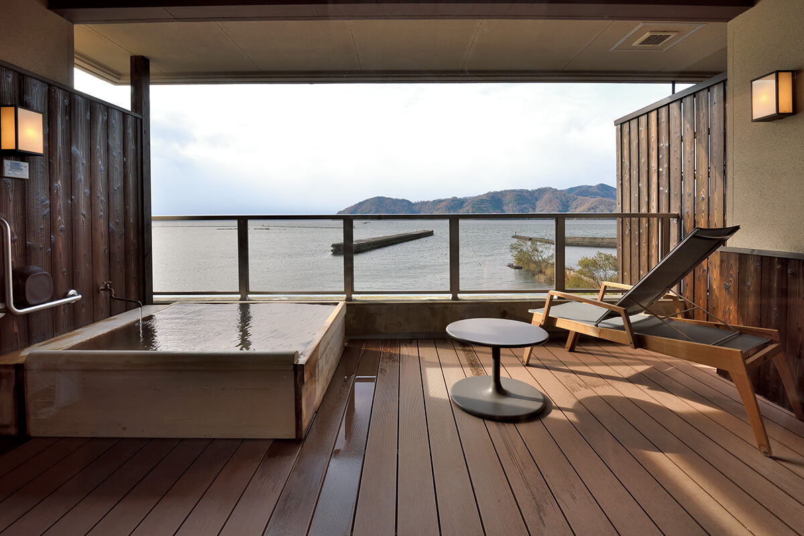
На севере озера Бива нет ни шумных набережных, ни магазинов, зато есть вода до горизонта, птицы и горячий источник. Здесь стоит рёкан «Бэниаю», куда гости приезжают на несколько ночей подряд, а на другом берегу работает ресторан «Кориан», который сделал из озёрной рыбы высокую кухню.
Север Бива
Озеро, похожее на северное
Бива, самое большое озеро Японии, с разных берегов выглядит по-разному. Юг оживлённый и нарядный, западный берег мягкий и спокойный, а к северу озеро становится тихим и строгим, почти как озёра Северной Европы. В воде отражаются ближние и дальние горы, берег изгибается плавными бухтами, на воду садятся стаи птиц, вдали темнеют острова. Пейзаж похож на рисунок тушью.
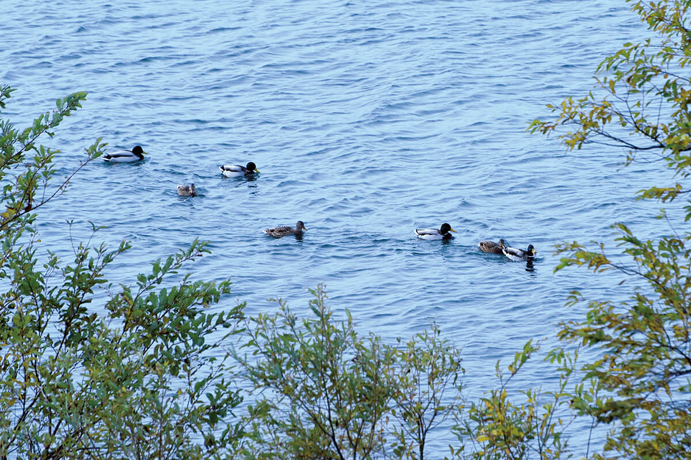
У этих мест к тому же долгая военная история. Когда-то здесь проходила главная дорога на север страны, и на стыке нынешних префектур Сига, Фукуи и Гифу не раз шли сражения. В тихих лесах до сих пор сохранились следы горных замков.
Самая известная битва произошла у горы Сидзугатакэ в 1583 году. По сути она решала, кто унаследует власть Нобунаги Оды (1534–1582), полководца, который начал объединять Японию и погиб, не закончив дела. Хидэёси Хасиба (1537–1598), будущий правитель страны, здесь наголову разбил Кацуиэ Сибату (1522–1583), одного из старших военачальников Нобунаги. По преданию, крови пролилось столько, что озеро покраснело, и даже рыбки аю в нём стали красными.
Рёкан
«Бэниаю»: красная рыбка и тихая вода
От этой легенды и пошло название рёкана: «Бэниаю» значит «красная аю». Но о войне здесь ничто не напоминает. Рёкан стоит у самой кромки воды на северном берегу, в городе Нагахама. Из лобби, из номеров и из большой купальни открывается один и тот же вид: спокойная гладь озера и силуэт острова Тикубусима, который с давних времён считают священным местом.
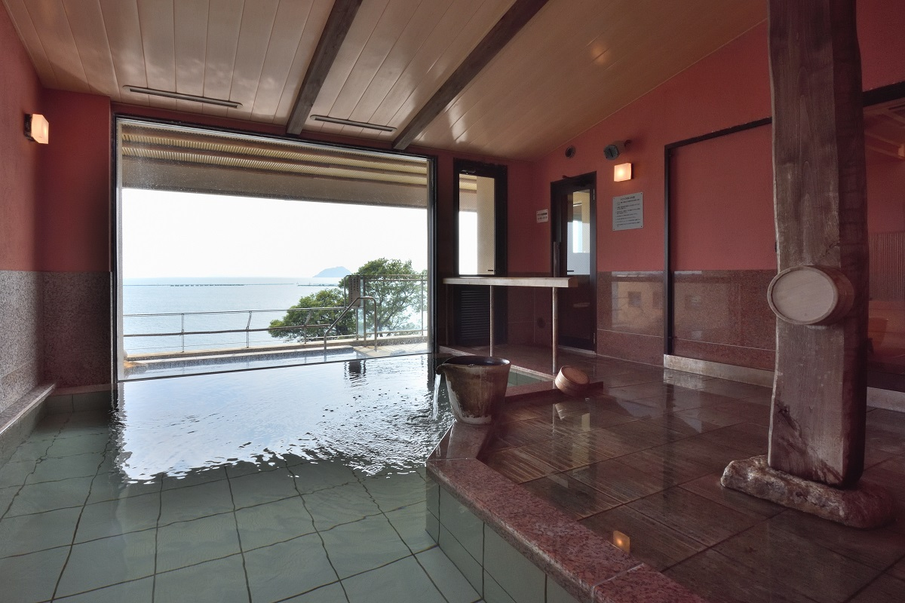
Главная особенность «Бэниаю», как ни странно, в том, что вокруг ничего нет. Нет круглосуточного магазина, нет кафе. Единственное место, куда можно выбраться, это придорожная станция «Кохоку Мидзудори» неподалёку. Поэтому почти всё время гости проводят в самом рёкане, и многие едут сюда именно за этим.
«Многие постоянные гости приезжают, чтобы ничего не делать и просто пожить у нас»
управляющий директор рёкана
В рёкане 15 номеров, и все выходят на озеро. Большинство оформлены в японском стиле, есть номера, где японский интерьер сочетается с западным, современный номер в западном стиле, который сдают одним гостям в день, и несколько особых номеров. В каждом своя полуоткрытая купальня с водой из источника. Можно просто сидеть и смотреть, как по озеру бегут небольшие волны, и городские заботы быстро забываются.
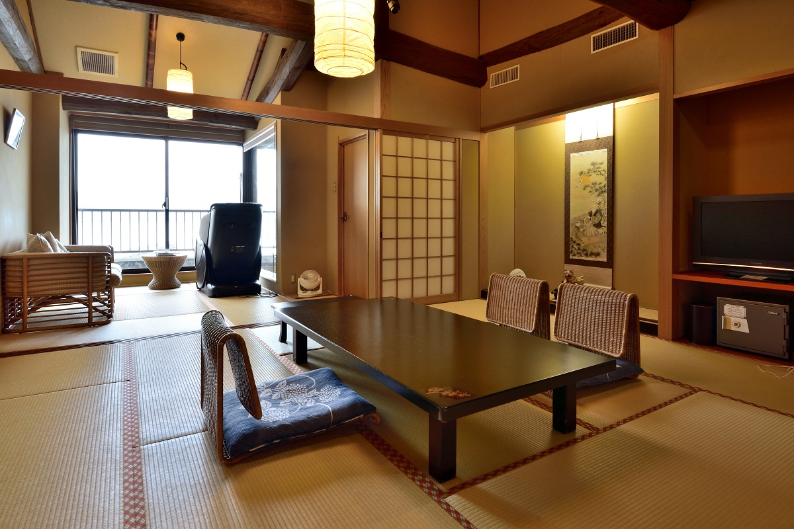
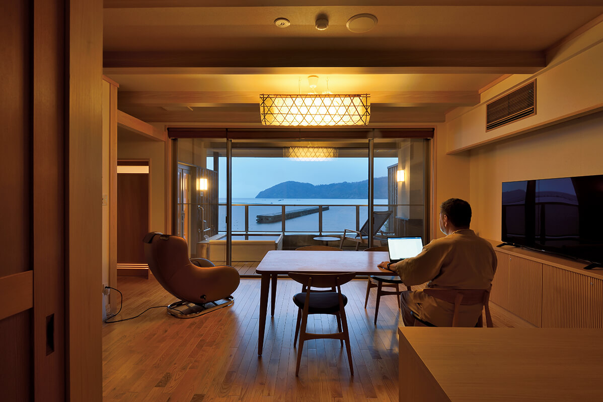
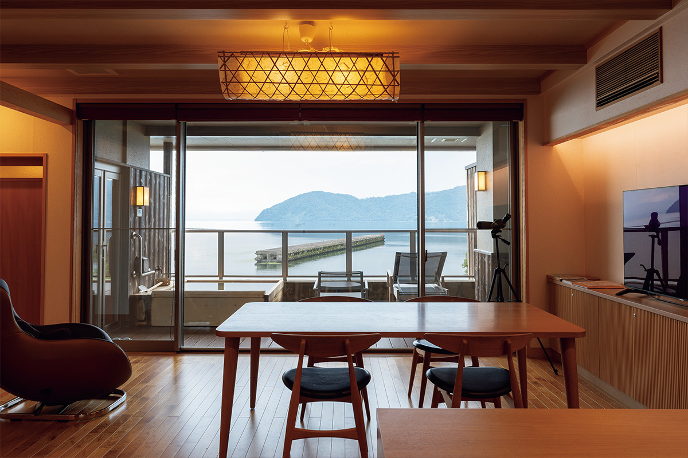
Онсэн
Вода Оноэ
Источник рёкана называется онсэн Оноэ. Даже знатоки горячих источников не всегда знают, где он находится, но вода у него редкая: мягкая, с зеленовато-золотистым оттенком, она будто обволакивает кожу и скользит по ней. Вода гидрокарбонатно-натриевая, такую считают полезной для кожи, и все купальни рёкана наполнены ею.
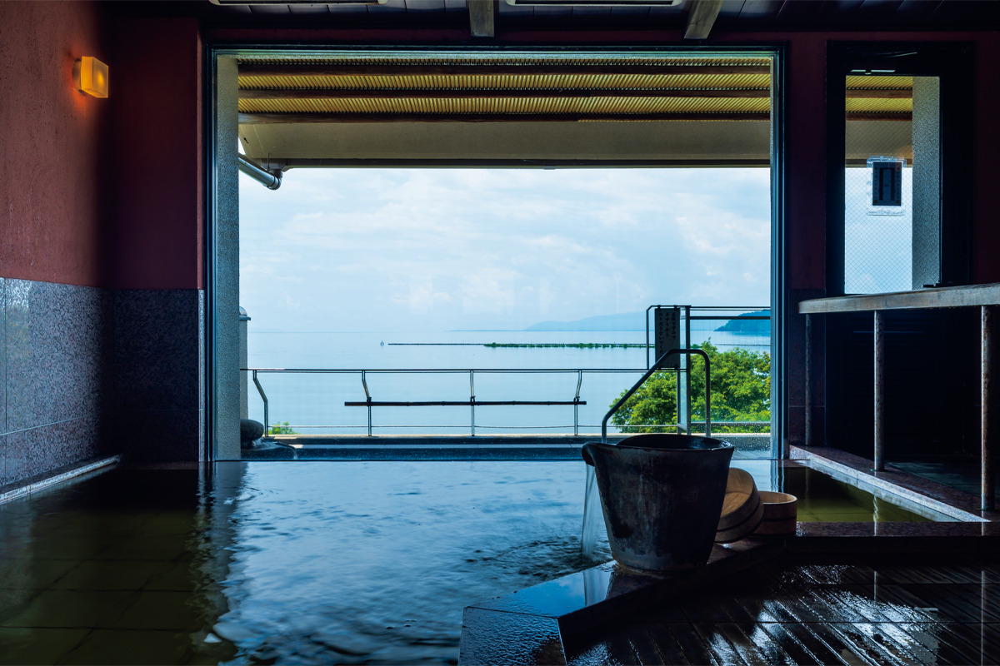
В номере есть своя купальня, но постоянные гости советуют сразу после заселения идти в большую. И во внутренней, и в открытой купальне перед глазами только озеро и далёкие горы Хира. Вода сливается с линией горизонта, а на закате солнце окрашивает озеро в красный цвет.
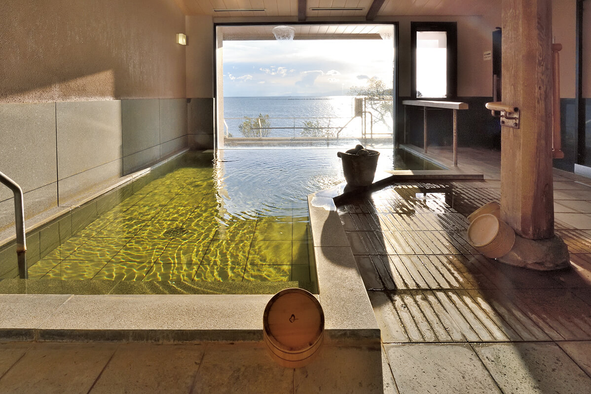
Ужин
Говядина Оми, озёрная рыба и фунадзуси
После купальни в рёкане положено хорошо поужинать с местным сакэ, и север озера Бива для этого щедрый край. Сакэ из Оми ценят далеко за пределами префектуры, озеро даёт рыбу, а в окрестных деревнях выращивают овощи и скот.
Главная гордость края это говядина Оми, одна из трёх знаменитых мраморных говядин Японии. Мясо с умеренной мраморностью не приедается, и если готовить его по-разному, его можно съесть сколько угодно. В разные вечера подают то угря в горшочке, то говядину сябу-сябу в соевом молоке.
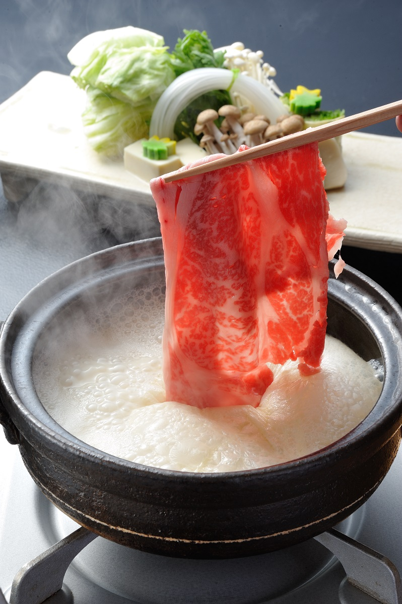
Но не менее важна озёрная рыба, которую едят в любое время года. С зимы до весны это мелкая рыбка мороко, с начала лета до начала осени аю, а ещё угорь. Отдельная история это фунадзуси, древняя форма суши из ферментированного карася, сегодня ставшая редкостью. Из-за резкого запаха многие её сторонятся, но здешняя фунадзуси вполне может изменить мнение. Попробовать прародителя суши на северном берегу Бива по-своему интересно.
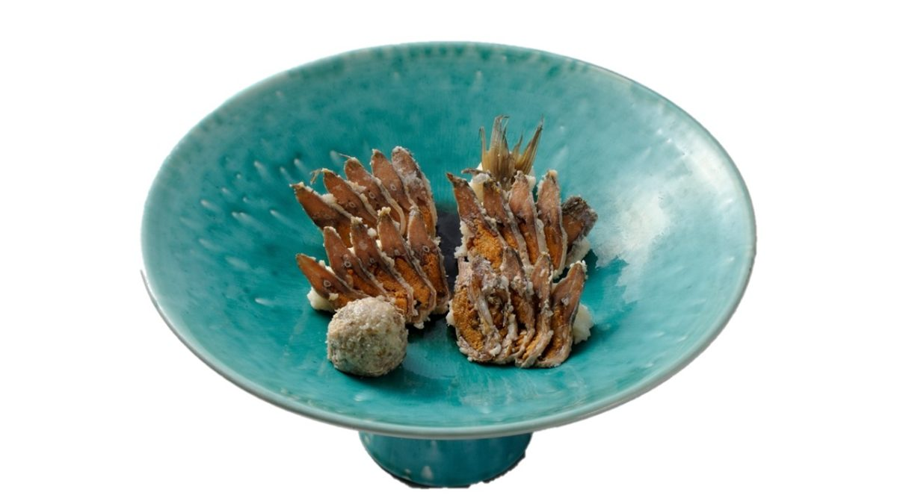
Главное блюдо рёкана называется «боку-набэ», это угорь в горшочке. В его основе местное блюдо «дзюндзюн», угорь с пряными овощами, тушённый как сукияки. В рёкане сначала варят бульон из голов и печени угря, потом добавляют овощи и само мясо, а бульон делают светлым и деликатным. В конце в горшок отправляют лапшу удон. Угорь здесь японский, и боку-набэ подают круглый год.
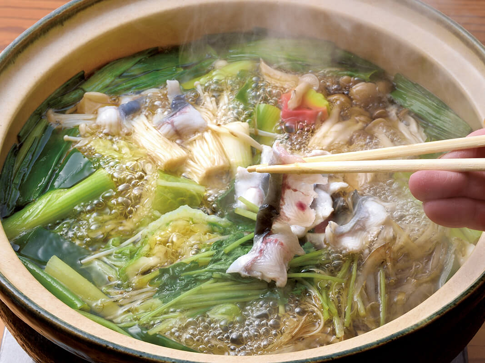
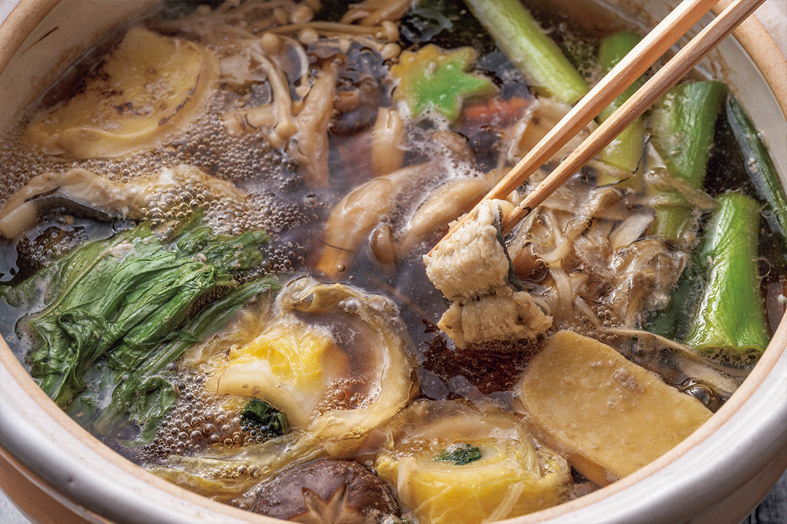
Всего в рёкане больше десяти вариантов ужина, среди них ужин из говядины Оми и ужин из аю. Ужинают в общем зале: там есть столы, места на татами с углублением для ног и стойка с видом на озеро. В 2024 году ночь с ужином и завтраком стоила от 26 450 иен с налогом и сервисным сбором, а вариант с боку-набэ от 34 250 иен.
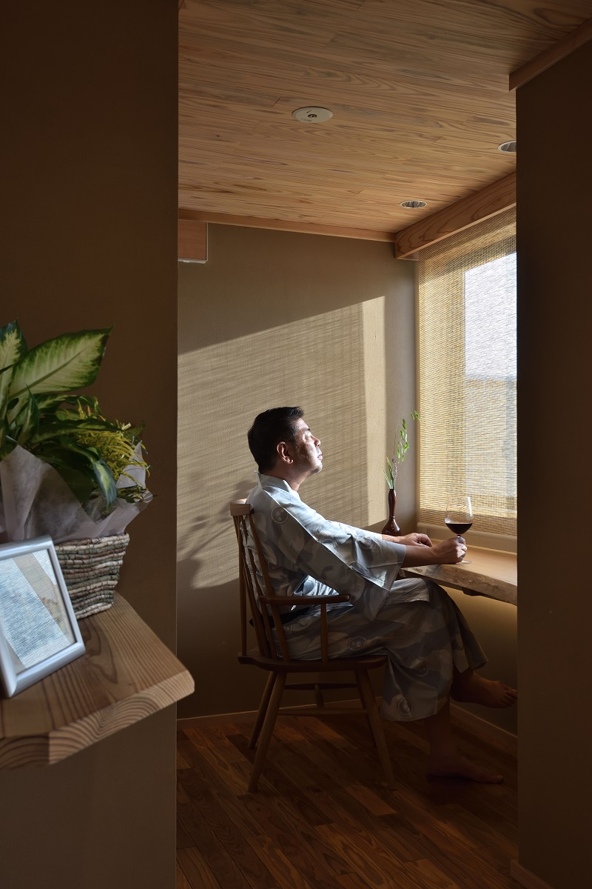
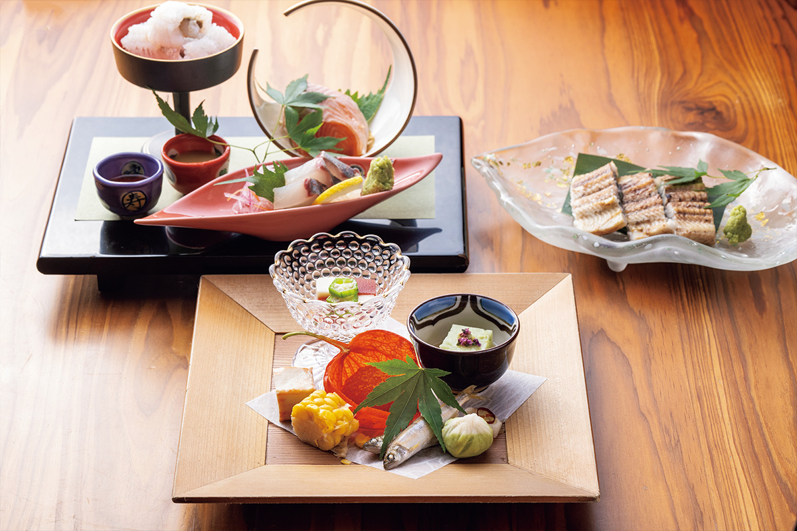
Долго
Жить, а не ночевать
Японский рёкан лучше всего раскрывается, если остаться на несколько ночей. Один киотский писатель, который пишет о путешествиях и гостиницах, бывал в «Бэниаю» столько раз, что сбился со счёта. Сюда он приезжал с семьёй, с друзьями, с женой, но чаще всего один, минимум на две ночи, а обычно на четыре.
Чаще всего он берёт с собой работу. Весь день пишет в номере, который стал ему почти домом, в перерывах несколько раз ходит в купальню, трижды в день ест и крепко спит. Великие писатели прошлого, по его словам, наверняка работали так же: запирались в гостинице и не выходили, пока не закончат. Впрочем, лучше всего ни о чём не думать и смотреть на озеро и птиц.
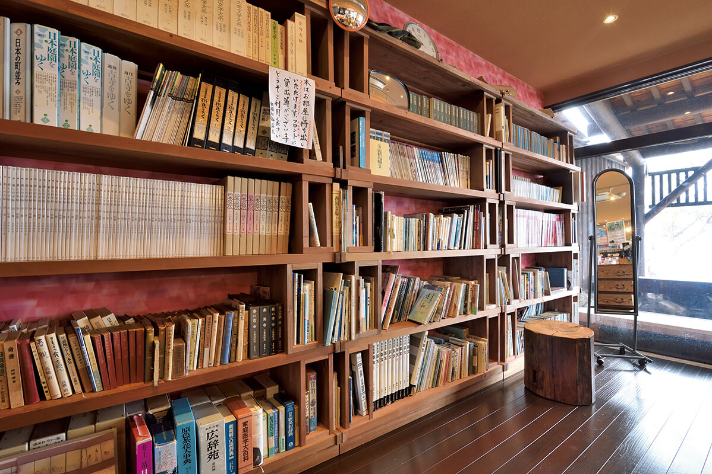
Ему нравится и то, что всё время можно ходить в рабочей одежде самуэ, которую выдают в рёкане: она удобнее юкаты и не распахивается. Ужинает он, если приехал один, за стойкой с видом на озеро. После двух, трёх, четырёх ночей ужины всё так же разнообразны.
По утрам будильником служат птицы, и за несколько дней начинаешь различать их голоса. В 2020 году на берегу стояла палаточная сауна в финском духе: кто посмелее, после неё прыгал прямо в озеро. Если хочется не только отдыхать, можно съездить на остров Тикубусима или к небольшому таинственному озеру Ёго неподалёку. А значит, одной ночи здесь мало.
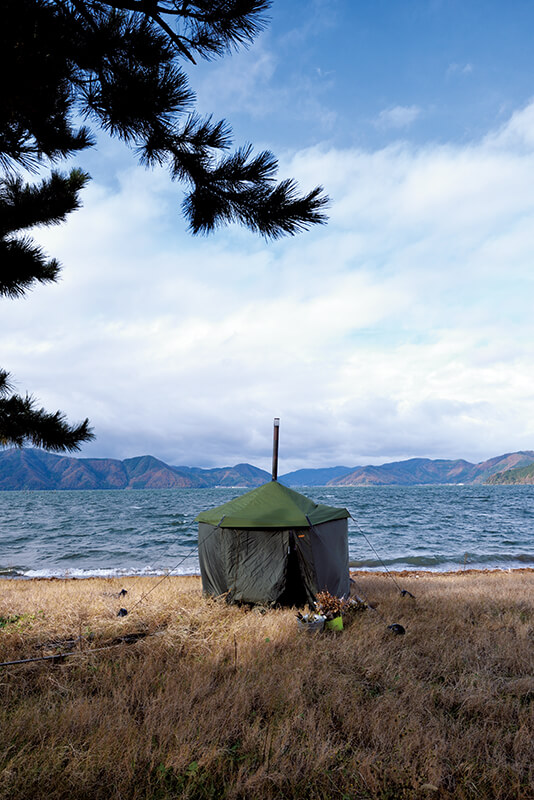
Рёкан «Бэниаю»
- Адрес
- префектура Сига, Нагахама, Кохоку-тё Оноэ, 312
- Телефон
- +81 749-79-0315 (9:00–21:00)
- Номера
- 15
- Цены / Вход
- ночь с ужином и завтраком от 26 450 иен, вариант с боку-набэ от 34 250 иен (с налогом и сервисным сбором)
- Заезд / выезд
- 14:00 / 11:00
- Как добраться
- на машине около 10 минут от развязки Киномото скоростной дороги Хокурику; от станции Такацуки линии JR трансфер около 10 минут (по предварительной записи)
- Сайт
- beniayu.com
Кайдзу
«Кориан»: озёрная дичь
На противоположном, северо-западном берегу озера лежит Кайдзу, старый портовый город в составе Такасимы. Когда-то он процветал как узел озёрного судоходства, и вдоль воды здесь до сих пор тянутся каменные набережные эпохи Эдо. В Кайдзу работает ресторан «Кориан», который хорошо знают гурманы. Готовят здесь только рыбу озера Бива и фунадзуси, а при ресторане есть номер для ночлега, который сдают одним гостям в день.
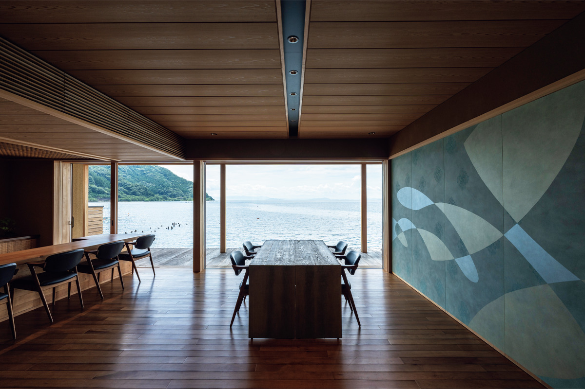
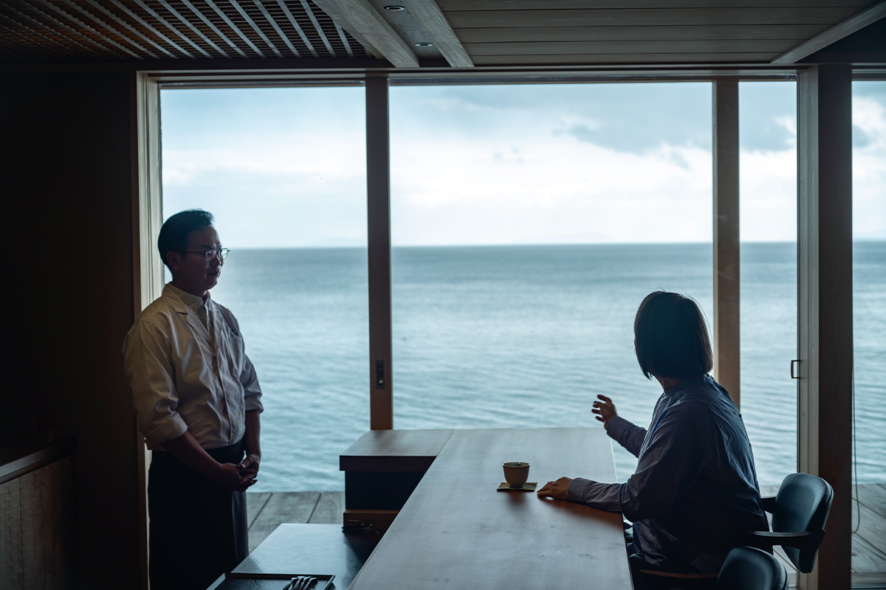
Ресторан принадлежит лавке «Уодзи», которая делает фунадзуси с 1784 года. Хозяин ресторана, седьмой глава лавки, учился в знаменитом киотском ресторане «Киттё» в Арасияме. В «Уодзи» карасей нигоробуна ферментируют две зимы подряд, и закваской служат бактерии, которые живут в кладовой с самого основания лавки.
Фунадзуси «Уодзи» любил писатель Сюсаку Эндо (1923–1996), один из крупнейших японских прозаиков XX века. Ресторан открыли, чтобы фунадзуси «Уодзи» ели там же, где растут караси, а меню из фунадзуси родилось из слов писателя.
«Делайте фирменным то, что можно съесть, только если приедешь сюда»
писатель Сюсаку Эндо
«В озере водится пресноводная рыба, но вода здесь прозрачная и глубокая, и рыба живёт иначе, чем в реках. Поэтому у нас сложилась культура есть её сырой: это именно озёрная рыба»
хозяин ресторана «Кориан»
Некоторые рыбы портятся так быстро, что их не довозят даже до Киото. Например, нигои почти не попадают на рынок. Хозяин называет такую рыбу «озёрной дичью»: настоящую свежесть можно попробовать только здесь.
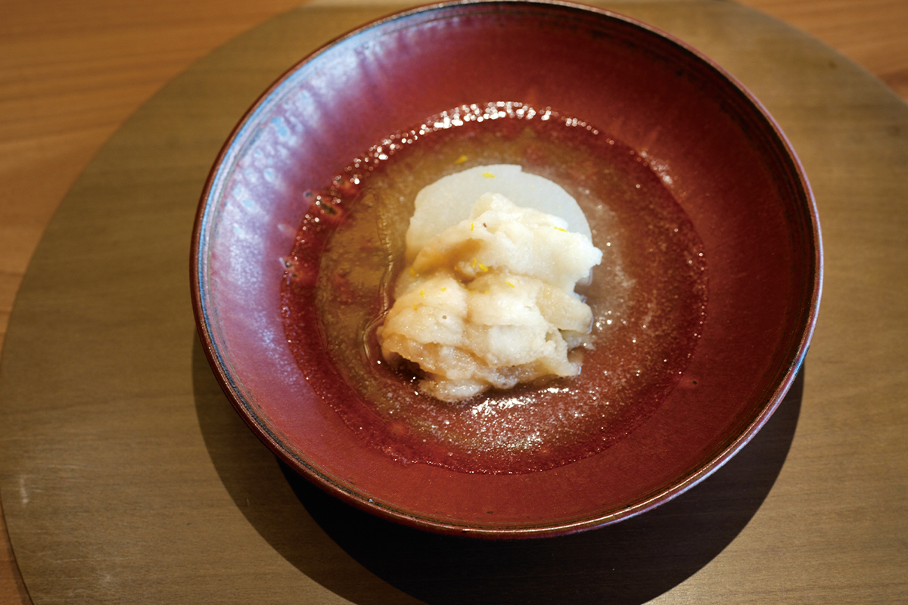
Меню
Как тайфун изменил кухню
Раньше в «Кориане» подавали классическую киотскую кухню кайсэки и с морской рыбой. Рядом префектура Фукуи, и зимой особенно популярны были ужины с крабом из Этидзэна. В 2018 году ресторан прямо задел тайфун, и здание было полностью разрушено. Восстановление заняло почти три года, и «Кориан» открылся снова в 2021 году.
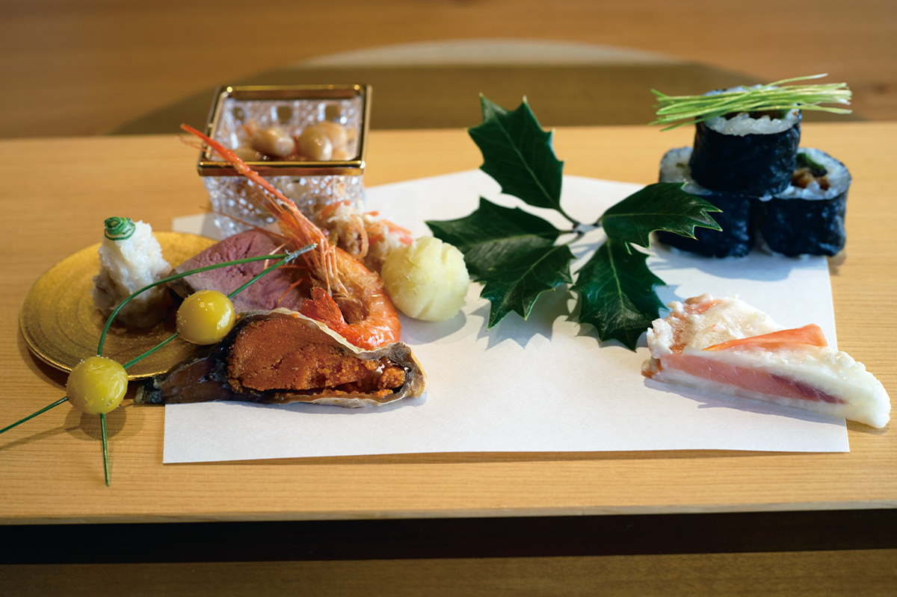
За это время хозяин многое передумал. Первый глава «Уодзи» торговал речной рыбой, и, оказавшись вдали от ресторана, который стоит прямо у озера, он понял, что его кухня должна рассказывать о собственных корнях. Теперь в «Кориане» готовят только из фунадзуси, сезонной рыбы озера Бива и овощей из окрестностей. Хозяин стал чаще ходить в порт и больше разговаривать с рыбаками.
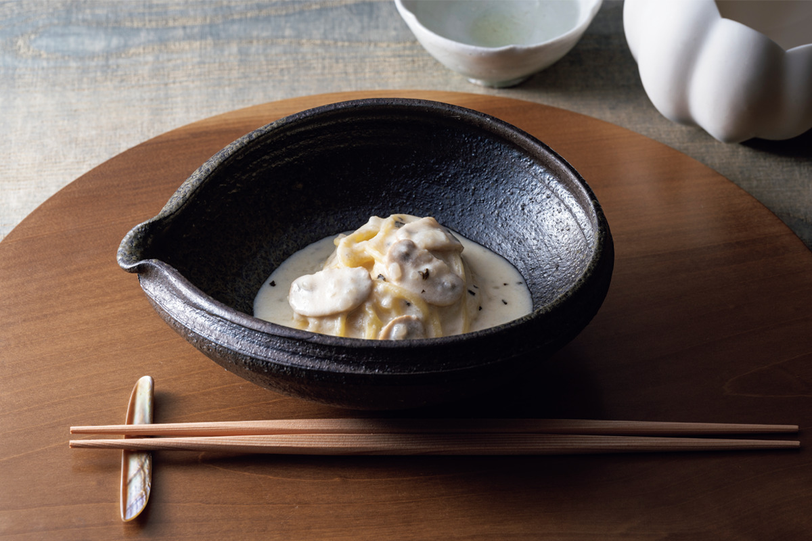
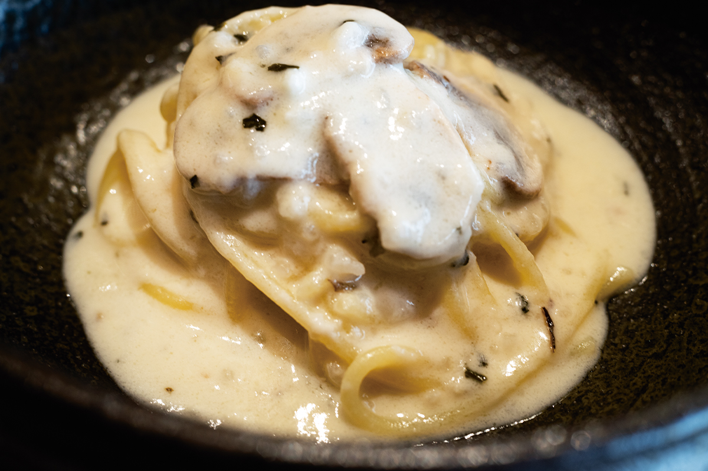
Самое неожиданное блюдо похоже на пасту с густым сливочным сыром. На самом деле это «паста с фунадзуси». Её соус делают из риса, в котором вместе с карасями шло молочнокислое брожение, и молока. Меню меняется каждый день, но эта паста появляется часто: с неё удобно начинать знакомство с фунадзуси. Хозяин бережно хранит то, что в семье передают от отца к одному сыну, но не выставляет традицию напоказ и делает её лёгкой, под современный стол.
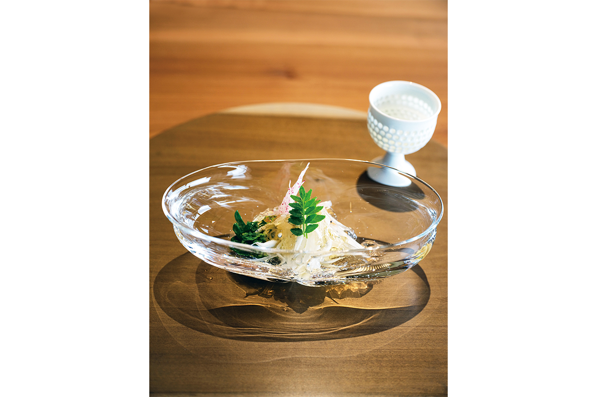
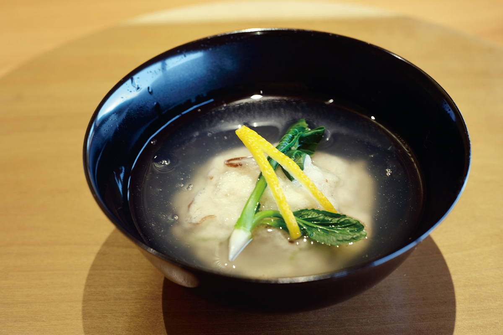
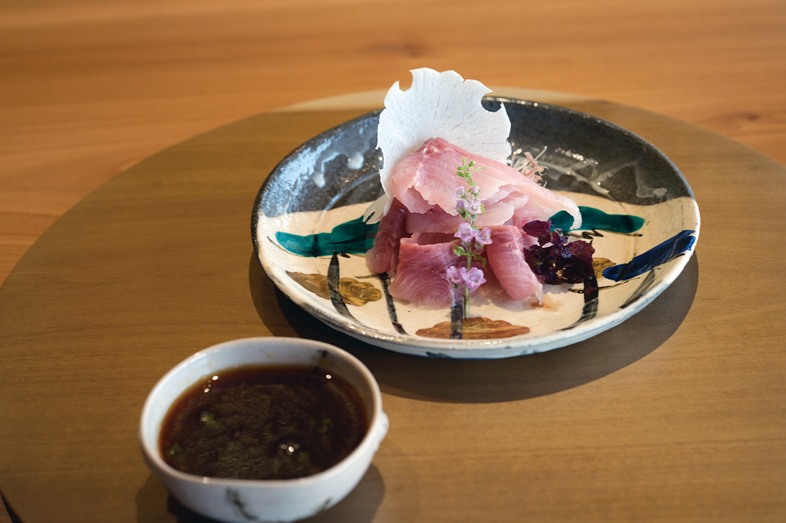
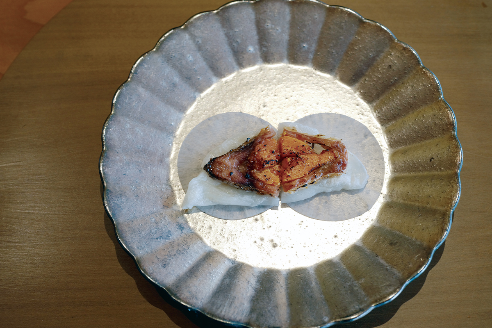
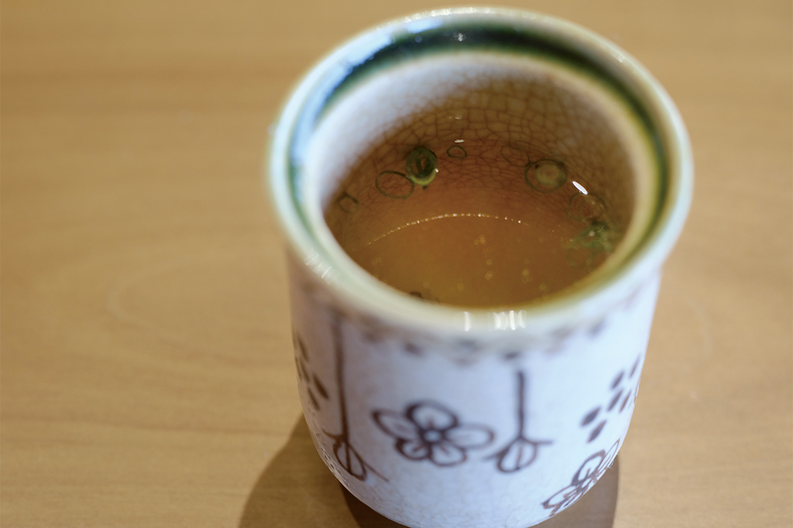
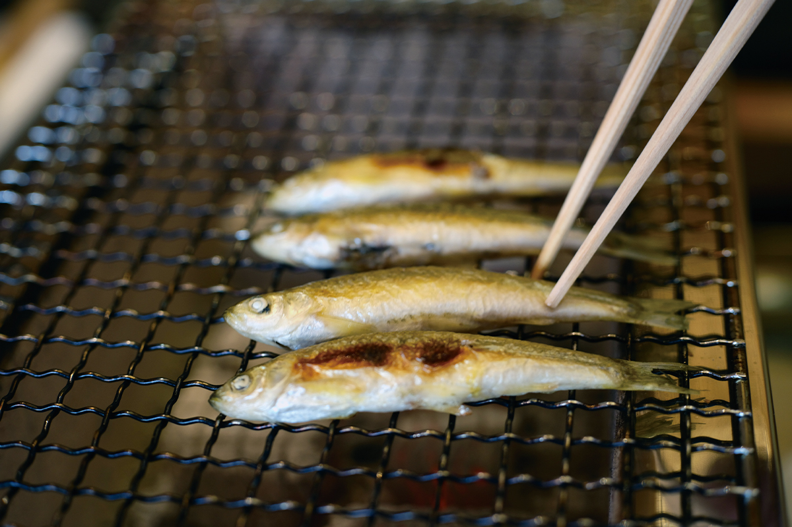
«У речной рыбы много видов, которые не попадают в торговлю. Если рыба свежая, никакого запаха нет. Приезжайте к нам и почувствуйте вкус вместе с местом, где эта рыба растёт»
хозяин ресторана «Кориан»
В 2024 году сезонный ужин состоял из 11–12 блюд и стоил 15 000 иен без налога и сервисного сбора, а ночь с ужином и завтраком 50 000 иен. Рыба, приготовленная на глазах у озера, где её поймали, легко запоминается.
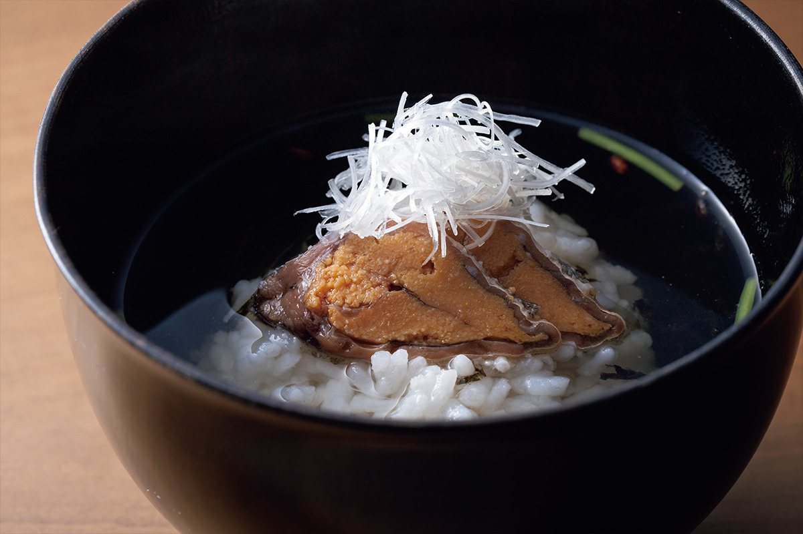
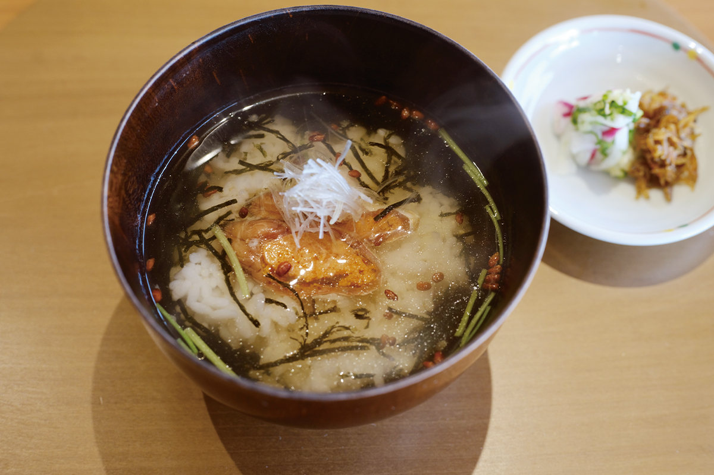
Ужин завершают местной клубникой с домашним мороженым. Для мороженого берут сакэ-касу, остатки от производства сакэ с местной сакэварни «Томита».
«Хочется передавать гостям здешнюю кухню, чтобы они увозили с собой что-то большее, чем просто вкусный обед»
хозяин ресторана «Кориан»
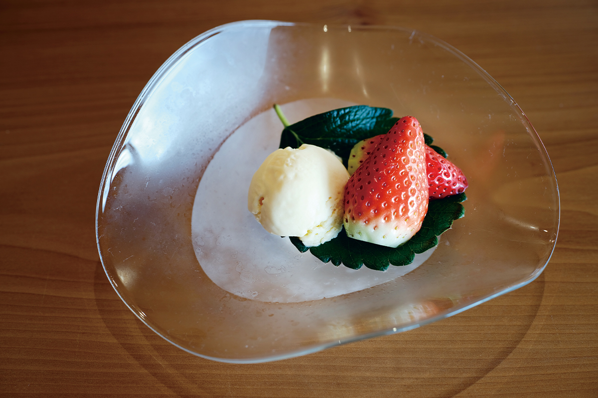
Ресторан «Кориан»
- Адрес
- префектура Сига, Такасима, Макино-тё Кайдзу, 2307
- Телефон
- +81 740-28-1010 (9:00–20:00)
- Часы работы
- обед с 12:00, ужин с 17:00 (около двух часов), только по предварительной записи
- Выходные
- вторник, первая и третья среда месяца
- Цены / Вход
- ужин 15 000 иен, ночь с ужином и завтраком 50 000 иен (без налога и сервисного сбора)
- Сайт
- korian.jp
Фото: Ко Мияди, Садахо Найто, Роберт Иппэй, Яёи Аримото.